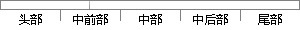

第六章，介绍了如何实现并建立高斯混合模型，如何对高斯混合模型进行参数的估计，及训练参数的。
片段位置图

相似结果|
相似片段 1：标准模板的质量，显得尤为重要，高质量的产品标准模板，为后期进行的产品缺陷检测提供了保证，从一定程度上确保了产品缺陷检测的准确率。本章也将介绍如何通过控制混合高斯模型的参数，达到提高产品模板质量的目的
相似片段 2：很多研究工作针对如何估计高斯堆数目进行。大多数估计混合模型的高斯堆值m的方法是将确定高斯堆数目的问题独立出来。也就是说，独立的估计出混合模型的高斯堆数目，然后独立的对高斯混合模型中的各个参数进行估计
相似片段 3：一个概率密度函数建立数学模型。在对语音特征矢量的概率统计建立模型后，首先要对每一个说话人语音训练（即估计）分别得到它们的模型参数。与用矢量量化 VQ中把训练数据进行聚类分类类似，在高斯混合模型 GMM中
相似片段 4：模型的原理及其几个重要的控制参数。其次在混合高斯模型的设计中，主要介绍了本系统中，建立混合高斯模型的过程，以及通过控制几个重要参数，来确保混合高斯模型的训练结果，即产品的标准模板的高质量。在产品标准模板训练的过程中介绍了本系统中利用混合高斯模型建立产品标准模板的具体流程。
相似片段 5：对数似然概率的值越大，就表明未知矢量来自模型兄的可能性越大。采用EM算法可以实现最大化式(3．3)的值。3．2．2高斯混合模型参数初始化由于训练GMM参数的EM算法要求模型进行必须得有一个初始参数。因此
相似片段 6：高斯模型的参数估计混合高斯模型的参数估计，是对由不同子类构成的概率密度分布进行建模。为了估计混合高斯概率密度模型分布的参数，需要决定子类的数量和每个子类的参数。可以通过使用训l练数据的采样和估计子类的数目及其参数来实现。
|
※ 片段修改建议 ※
近似词参考：- 介绍：先容
- 如何：若何 怎样
- 建立：成立 创立 创设 建树 确立 设立建设 竖立 创建 树立
- 混合：夹杂 混淆
- 模型：模子
- 如何：若何 怎样
- 混合：夹杂 混淆
- 模型：模子
- 进行：举行
- 估计：估量 预计
- 训练：练习
系统自动生成语句：第六章，先容了若何实现并成立高斯夹杂模子，若何对高斯夹杂模子举行参数的估量，及练习参数的。
注：本片段修改建议为系统自动生成，仅供参考。